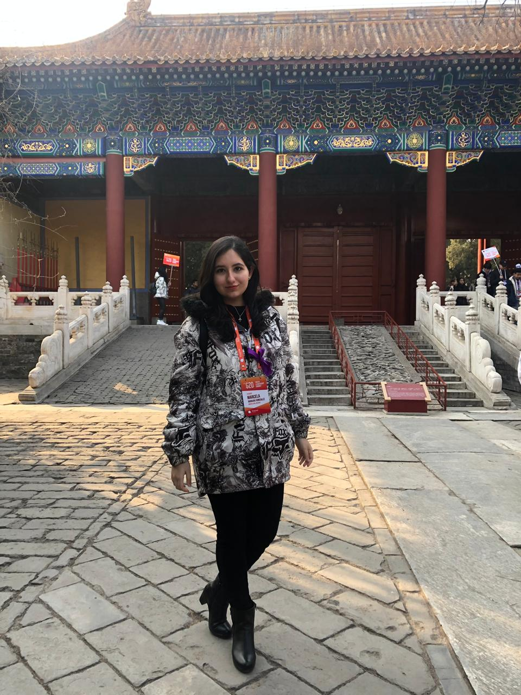
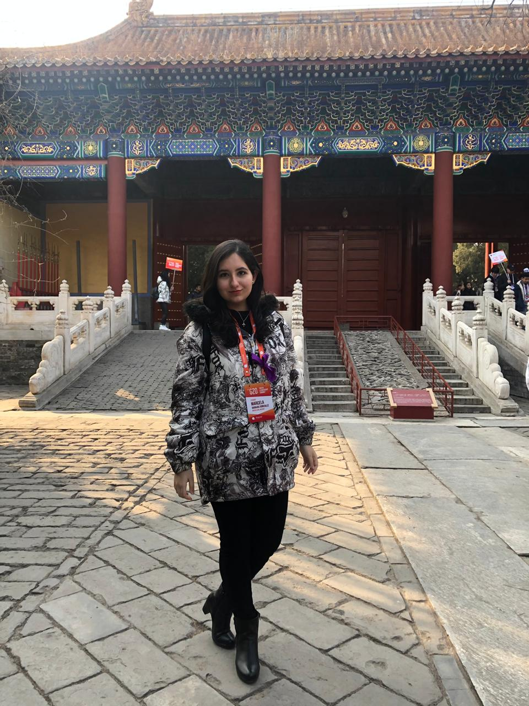

Beijing, China
Beijing es la capital de la Repúbilica Popular China, una de las ciudades con más habitantes del mundo y un destino turístico con mil y un cosas por hacer.

 

¿A dónde ir?
- La Ciudad Prohibida. También conocida como el Palacio Imperial, la Ciudad Prohibida se encuentra ubicada en el centro de Beijing. Este complejo fue el "centro del poder de las dinastías Ming (1368-1644) y Qing (1644-1911) durante un largo periodo desde 1420 hasta 1912" (Embajada de la República Popular China en Venezuela, 2005a). El motivo por el cual es conocida como la Ciudad Prohibida es debido a que solo un grupo selecto de la población, los cortesanos, podían ingresar para interactuar con el emperador, el resto de los habitantes tenían prohibido el acceso. Hoy en día, su deslumbrante arquitectura la hacen un gran destino turístico para millones de personas.
- El Templo de Confucio. El Templo de Conficio fue construido un año despues la muerte de aquel maestro cuyo nombre ahora lleva. La que era su residencia se expandió para dar paso a un espacio donde se pudiera difundir su pensamiento: el confucianismo (Embajada de la República Popular China en Venezuela, 2005b). El templo es un espacio para la reflexión, lleno de historia y cultura que lo hacen un lugar digno de atención.
- El Palacio de Verano. "Construido en 1750, destruido en su mayor parte durante la guerra de 1860 y reconstruido sobre sus cimientos en 1886, el palacio de verano de Beijing es una obra maestra del arte paisajístico chino" (UNESCO, s.f.). El Palacio de Verano se compone del Lago Kunming, una serie de colinas y una gran variedad de templos y jardines que en conjunto crean un espacio visualmente formidable. Es el lugar perfecto para capturar recuerdos a través de fotografías, pero también un espacio ideal para comprar detalles en la serie de pequeñas tiendas instaladas a las orillas de lago.
¿Te gustaría conocer más lugares?
¡Aquí hay más opciones que pueden ser de tu interés!
Referencias

- Embajada de la República Popular China en Venezuela. (Agosto, 2005). La Ciudad Prohibida de Beijing. Embajada de la República Popular China en Venezuela. http://ve.china-embassy.gov.cn/esp/wh/qian24/qian347/
- Embajada de la República Popular China en Venezuela. (Septiembre, 2005). El Templo de Confucio. Embajada de la República Popular China en Venezuela. http://ve.china-embassy.gov.cn/esp/wh/qian24/qian377/
- UNESCO. (s.f.). Palacio de verano y jardín imperial de Beijing. UNESCO. https://whc.unesco.org/es/list/880